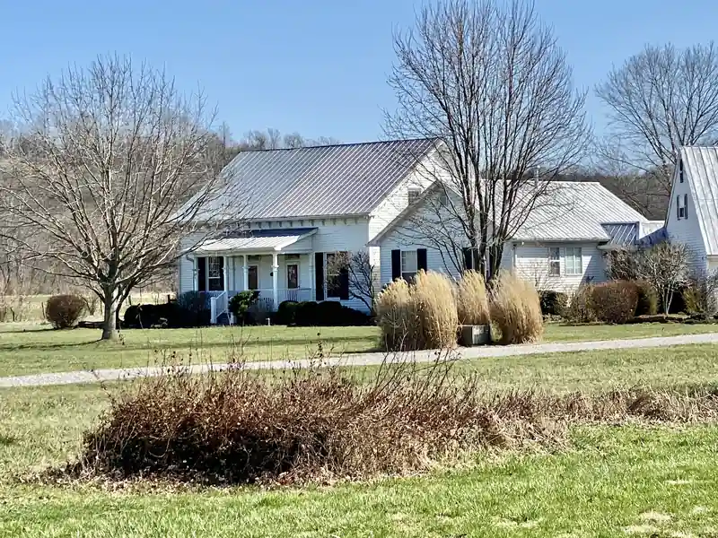
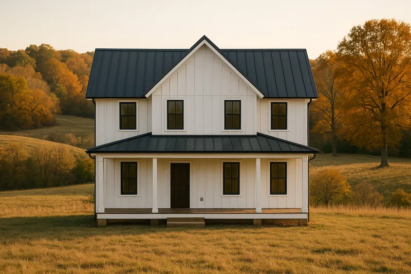
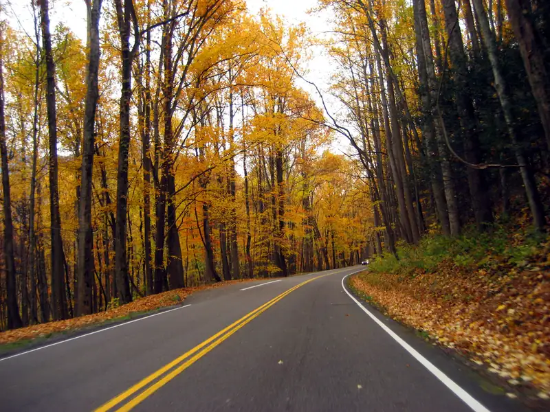

Roofing in Knoxville, TN
Metal roofing for East Tennessee homes, cabins and barns
Metal costs more up front than shingles and can last a lot longer. The two common kinds, standing seam and exposed fastener, suit different buildings. Here's how to tell which fits yours, and when shingles are still the better buy.

- Free roof inspections. We look, you decide.
- Written, line-by-line prices. Every part of the job on paper.
- $15,000 to $30,000. Most asphalt shingle replacements.
- Brands you know. See the products we install.
- 24-hour emergency line. Leaks and storm damage, any hour.
Standing seam
Standing seam panels run from the eave to the ridge in one piece, joined by raised seams that lock together. Clips hidden under the seams hold the panels to the deck, so no screw goes through the face of the roof. Nothing backs out, no washer dries up, and the panels can move with summer heat and winter cold without working against their fasteners.
It costs more than exposed-fastener metal, in material and in labor. It's the pick for a house or cabin you plan to keep, and it can go on lower-pitched roofs than screw-down panels can.

Exposed-fastener panels
Ribbed panels screwed straight through the face, with a rubber washer under each screw head. They go on fast and cost less, which is why so many barns and shops around Knox County have them. The trade-off is upkeep. Washers age in the sun and screws loosen as the metal expands and contracts, so plan on checking and replacing screws over the life of the roof. On a house that's an occasional ladder job. On a hay barn, most owners don't mind.
What a metal roof job includes
The panels are the part you see. Under them goes a synthetic underlayment rated for the heat that builds under metal. Around them goes the trim: drip edge at the eaves, rake trim on the gable ends, a vented ridge cap, and closures that keep wasps and wind-driven rain out of the panel ribs. Pipes get boots made for metal, and walls and chimneys get flashing bent to the panel profile. Your written price names the panel and its gauge.
Metal or shingles?
Architectural shingles cost less and suit most houses around Knoxville. Metal earns its price when you plan to stay 20 years or more, or when a steep roof needs to shed rain and leaves fast. If neither fits, shingles are usually the better buy, and we'll say so. Both can be priced for the same roof, so you're comparing two written numbers instead of a guess.
Two questions come up a lot. Is it loud in the rain? On a house, the panels sit over solid decking, underlayment, an attic and insulation, and those layers soften the sound. Open-framed barns are louder. Does it draw lightning? No. Lightning goes for the tallest point around, whatever it's made of.
Thinking about metal over the old shingles? Read Metal roof over shingles? first.

Cabins, barns and shops
Steep cabin roofs in Sevier County are a natural fit for metal: rain and leaves slide off, and there's less to maintain on a rental you can't check every week. For a rental, the job gets scheduled around your bookings so a roof doesn't cost you a weekend of guests. Barns, shops and outbuildings in Karns and Powell are usually exposed-fastener jobs, priced to the building and how it's used.

Questions about metal roofing
Will my HOA allow a metal roof?
Some Knoxville-area covenants allow metal and some don't, and many that allow it set a color list. Read your HOA's rules before you fall for a panel profile. If metal is allowed, bring us the review form. We'll fill in the maker, the panel and the color, and order only after the HOA signs off in writing.
Will hail dent a metal roof?
Big hail can. Thinner panels dent more easily than thicker ones, and a dent in metal is usually cosmetic: the panel still sheds water. Some policies leave cosmetic damage to metal roofs out of coverage, so read yours or ask your agent before you choose a panel. If hail worries you, ask for the gauge on the written price and compare.
Is a metal roof more expensive than shingles?
Up front, usually yes. Metal costs noticeably more to install than architectural shingles, and standing seam costs more than exposed-fastener panels. In return you get a longer life and less upkeep, which matters on steep cabin roofs and for owners who plan to stay. Ask for both prices at your free inspection and compare them on paper.
Do you work on cabins and rental properties?
Yes. Cabins and rental homes are welcome, and they often have steep pitches and metal roofs, both of which we work on. A property manager can book an inspection for a place they don't live at; just give us the address and how to reach the yard. If you look after more than one property, each gets its own written price.
Why do roofing quotes vary so much?
Because they often aren't pricing the same roof. One quote includes full tear-off, ice-and-water membrane in the valleys, and fresh pipe boots and flashing. Another reuses the flashing, skips the membrane and bills rotted decking later. Ask each roofer for a line-by-line price and compare line to line.
Price metal and shingles together
Four boxes. We'll call you back to pick a time.
Rather talk? Call (865) 830-8126. Rather text? Send a photo.